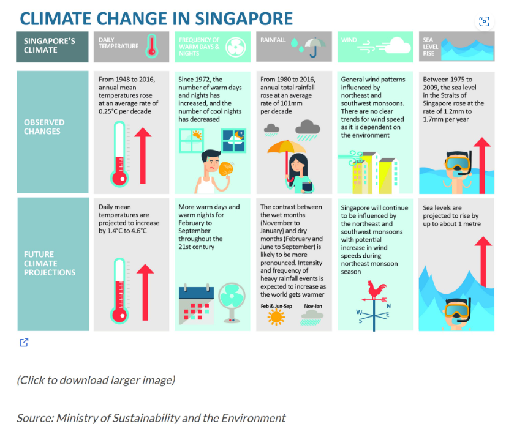

pacman::p_load(readxl, ggiraph, plotly,
patchwork, DT, tidyverse, gifski, gapminder, gganimate, ggplot2,lubridate, transformr) Take Home Exercise 3: Be Weatherwise or Otherwise
1. Overview:
According to an office report as shown in the infographic below,
Daily mean temperature are projected to increase by 1.4 to 4.6, and
The contrast between the wet months (November to January) and dry month (February and June to September) is likely to be more pronounced.

1.1 Objective
In this take-home exercise, you are required to:
Select a weather station and download historical daily temperature or rainfall data from Meteorological Service Singapore website,
Select either daily temperature or rainfall records of a month of the year 1983, 1993, 2003, 2013 and 2023 and create an analytics-driven data visualisation,
Apply appropriate interactive techniques to enhance the user experience in data discovery and/or visual story-telling.
From the above requirements for this exercise, i have selected the Changi weather station, and downloaded the records of December of the year 1983, 1993, 2003, 2013 and 2023.
1.2 Getting Started
1.2.1 Installing and loading the packages
The code chunk below are the R packages used in this exercise:
1.2.2 Data import
Based on the objective, the temperature records from Changi weather station is used from (link), from Dec of the year 1983, 1993, 2003, 2013 and 2023.
Dec_temp <- c("data/DAILYDATA_S24_198312.csv", "data/DAILYDATA_S24_199312.csv",
"data/DAILYDATA_S24_200312.csv", "data/DAILYDATA_S24_201312.csv",
"data/DAILYDATA_S24_202312.csv")
list_of_temp <- lapply(Dec_temp, read.csv)
temp_combined <- do.call(rbind, list_of_temp)After examine the list_of_temp data, for the purpose of the exercise the five data sets are combined and named temp_combined before analyzing.
2. Interactive visualizations to Discover Temperature Change
Next is to analyse on the change of daily temperature for Singapore over the half decades, as the data is used is only for December, so we assume that December can represents the temperature change for Singapore.
The below code chunk plots the interactive visual for user to discover the temperature change:
temp_combined$Date <- as.Date(with(temp_combined, paste(Year, Month, Day, sep="-")), "%Y-%m-%d")
gg <- ggplot(temp_combined, aes(x = Day)) +
geom_line(aes(y = Mean.Temperature, color = as.factor(Year), linetype = "Mean")) +
geom_line(aes(y = Maximum.Temperature, color = as.factor(Year), linetype = "Maximum")) +
geom_line(aes(y = Minimum.Temperature, color = as.factor(Year), linetype = "Minimum")) +
scale_color_manual(values = c("1983" = "black", "1993" = "blue", "2003" = "green", "2013" = "orange", "2023" = "red")) +
scale_linetype_manual(values = c("Mean" = "solid", "Maximum" = "dashed", "Minimum" = "dotted")) +
labs(title = 'Daily Temperatures at Changi Station for December', x = 'Day of December', y = 'Temperature (°C)', color = "Year", linetype = "Temperature Type") +
theme_minimal() +
theme(legend.title = element_blank())
ggplotly(gg, tooltip = c("text", "y"))The user can hover over the graph to see the changes on the numbers for the years, by selecting the different values for mean maximum, and minimum user can have a clear view of the trend of temperature.
Overall Mean temperature for Singapore for 2023 is the highest over 30 days and for year 1983 is the lowest.
For maximum temperature 2023 also have the average highest temperature, but the peak of the highest temperature happen in 2013 which is 33.7 Degree Celsius
For the Minimum temperature, 2023 shows that it is still the highest amount other 4 years, and for 2013 there is also the peak for the lowest temperature of 21.2 Degree Celsius.
From the above information discovered, it is clearly that the temperature for Singapore is gradually increasing over the years.
Important
Important
It is important that to use multiple month in comparison, as for Singapore there are some months with rainy weather, some months are dry weather.
For year 2013 December it has both the highest temperature and lowest temperature appears, indicating that maybe the weather is uncommon, need more research to discover what happen during that period.